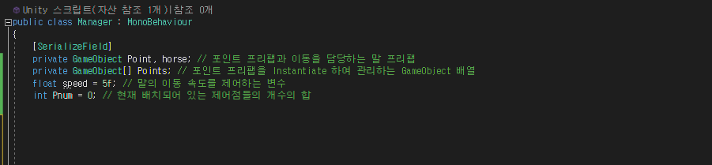

GAME LOGIC
유니티 엔진에서 구현한 게임 개발에 사용된 다양한 로직들을 소개합니다.
Unity - 베지어 곡선의 구현 및 오브젝트의 이동

해당 프로젝트 테스트하기
Unity-Engine을 통해 베지어 곡선을 활용한 오브젝트의 이동을 구현했습니다.
Unity-Engine을 통해 베지어 곡선을 활용한 오브젝트의 이동을 구현했습니다.
곡선 이동을 하는 말 역할의 프리팹과 곡선의 제어점인 포인트 프리팹을 만듭니다.
포인트 프리팹은 런타임 상에서 해당 오브젝트를 마우스로 끌어서 화면상에서 이동시키는 스크립트를 포함하고 있습니다.
포인트 프리팹은 런타임 상에서 해당 오브젝트를 마우스로 끌어서 화면상에서 이동시키는 스크립트를 포함하고 있습니다.

이 프로젝트의 모든 요소를 컨트롤하는 Manager 스크립트를 작성했습니다.
해당 스크립트에는 위와 같은 변수를 포함하고 있으며, 후술할 베지어 곡선 관련 함수와
코루틴을 제외하고도 포인트(제어점)의 추가 및 제거, 코루틴 호출 함수 등을 포함하고 있습니다.
해당 스크립트에는 위와 같은 변수를 포함하고 있으며, 후술할 베지어 곡선 관련 함수와
코루틴을 제외하고도 포인트(제어점)의 추가 및 제거, 코루틴 호출 함수 등을 포함하고 있습니다.
BezierCurve 코루틴은 Manager 스크립트에 포함되어 있는 베지어 곡선 관련 코루틴으로, 진행 과정은 아래와 같습니다.
(1) 오브젝트 생성 및 초기화: 코루틴이 시작되면 먼저, 베지어 곡선을 따라 이동할 오브젝트(말)를 생성합니다. 이 오브젝트는 첫 번째 제어점인 시작점의 위치에 생성됩니다.
(2) 시작점과 끝점 설정: 베지어 곡선의 시작점과 끝점은 Points 배열의 첫 번째와 마지막 요소로 설정됩니다.
(3) 제어점 위치 불러오기: Points 배열에 저장된 제어점들의 위치를 기반으로 베지어 곡선을 계산하기 위해 제어점 위치를 설정합니다.
(4) 이동 시간 및 거리 설정: 시작점과 끝점 사이의 거리를 기반으로 이동 시간을 계산합니다.
(5) 오브젝트 이동 : 베지어 곡선을 따라 오브젝트를 이동시킵니다.
(6) 베지어 곡선 계산: 베지어 곡선을 계산하여 현재 시간(t)에 따른 오브젝트의 위치를 결정합니다. 이 위치는 CalcBazier() 함수를 통해 계산됩니다.
(7) 코루틴 종료: 이동이 완료되면 코루틴이 종료되고, 생성된 오브젝트가 파괴됩니다.
해당 코루틴에서 호출하는 RotateTowardsTarget 함수는 곡선 이동과 관련없는 함수로, 이동하는 오브젝트가 바라보는 방향을 제어하는 역할을 합니다.
(1) 오브젝트 생성 및 초기화: 코루틴이 시작되면 먼저, 베지어 곡선을 따라 이동할 오브젝트(말)를 생성합니다. 이 오브젝트는 첫 번째 제어점인 시작점의 위치에 생성됩니다.
(2) 시작점과 끝점 설정: 베지어 곡선의 시작점과 끝점은 Points 배열의 첫 번째와 마지막 요소로 설정됩니다.
(3) 제어점 위치 불러오기: Points 배열에 저장된 제어점들의 위치를 기반으로 베지어 곡선을 계산하기 위해 제어점 위치를 설정합니다.
(4) 이동 시간 및 거리 설정: 시작점과 끝점 사이의 거리를 기반으로 이동 시간을 계산합니다.
(5) 오브젝트 이동 : 베지어 곡선을 따라 오브젝트를 이동시킵니다.
(6) 베지어 곡선 계산: 베지어 곡선을 계산하여 현재 시간(t)에 따른 오브젝트의 위치를 결정합니다. 이 위치는 CalcBazier() 함수를 통해 계산됩니다.
(7) 코루틴 종료: 이동이 완료되면 코루틴이 종료되고, 생성된 오브젝트가 파괴됩니다.
해당 코루틴에서 호출하는 RotateTowardsTarget 함수는 곡선 이동과 관련없는 함수로, 이동하는 오브젝트가 바라보는 방향을 제어하는 역할을 합니다.
CalcBazier() 함수는 주어진 시작점, 끝점, 제어점들을 기반으로 베지어 곡선에서의 특정 시간대(t)에 해당하는 위치를 계산합니다. 이 함수의 진행 과정은 다음과 같습니다.
(1) 시작점과 끝점 사이의 선형 보간: 시작점과 끝점 사이의 선형 보간값을 계산합니다. 이 보간은 시간(t)에 따라 시작점에서 끝점으로 이동하는 선형 보간값을 나타냅니다.
(2) 제어점에 대한 가중치 계산: 각 제어점에 대한 가중치를 계산하여 보간값에 추가합니다.
시작점과 끝점을 제외한 제어점 수만큼의 횟수를 반복하면서 각 제어점의 가중치를 계산합니다.
가중치(weight)는 이항 계수와 t의 거듭제곱에 의해 결정됩니다. 각 제어점에 대한 가중치를 계산하고,
이를 보간값에 추가하여 베지어 곡선을 형성하도록 도움을 주는 역할을 합니다.
(3) 최종 위치 반환: 계산된 보간값을 반환하여 현재 시간(t)에 해당하는 베지어 곡선상의 위치를 반환합니다.
(1) 시작점과 끝점 사이의 선형 보간: 시작점과 끝점 사이의 선형 보간값을 계산합니다. 이 보간은 시간(t)에 따라 시작점에서 끝점으로 이동하는 선형 보간값을 나타냅니다.
(2) 제어점에 대한 가중치 계산: 각 제어점에 대한 가중치를 계산하여 보간값에 추가합니다.
시작점과 끝점을 제외한 제어점 수만큼의 횟수를 반복하면서 각 제어점의 가중치를 계산합니다.
가중치(weight)는 이항 계수와 t의 거듭제곱에 의해 결정됩니다. 각 제어점에 대한 가중치를 계산하고,
이를 보간값에 추가하여 베지어 곡선을 형성하도록 도움을 주는 역할을 합니다.
(3) 최종 위치 반환: 계산된 보간값을 반환하여 현재 시간(t)에 해당하는 베지어 곡선상의 위치를 반환합니다.
해당 스크립트는 위에 서술한 베지어 곡선 관련 함수 외에 런타임에서의 진행을 위한 여러 함수들을 포함하고 있습니다.